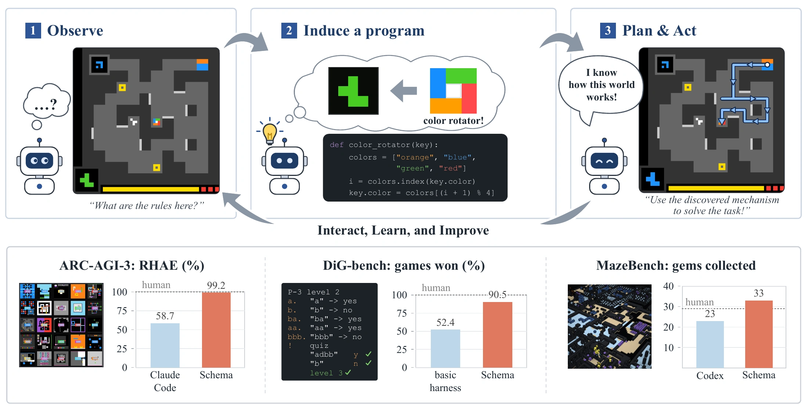

Jiani Wang
Undergraduate Student
Yao Class
Tsinghua University
About Me
I am a senior undergraduate in the Yao Class at Tsinghua University. I am currently a research intern at Impossible Research, a stealth AI startup, advised by Dr. Haiwen Feng and Prof. Andrea Zanette. I also collaborate with Prof. Angjoo Kanazawa.
Since 2025, I have been fortunate to work with Prof. Kaifeng Lyu and Prof. Jian Li on data-centric machine learning at Tsinghua University.
I am actively seeking PhD opportunities starting in Fall 2027.
I’m always happy to explore potential collaborations, discuss research, or have a casual chat. Feel free to email me!
Research Interests
I am broadly interested in continual learning and self-improving LLM agents, particularly how agents learn through interaction with the world. I approach these questions from three complementary perspectives:
- Algorithms: how agents perceive and interact with the world, continually updating their understanding to guide exploration and problem solving.
- Environments: how to automatically generate environments with well-calibrated difficulty for agent learning and evaluation.
- Priors: how training data, including synthetic data, shapes what models learn and how they generalize. I am also interested in how the knowledge and capabilities acquired from data provide a foundation for continual learning and adaptation in agents.
Ongoing Projects
My ongoing projects focus on understanding how the accuracy and cost of perception shape the efficiency of agentic discovery under limited context, and on designing new, more challenging interactive unknown environments to test agents’ rapid adaptation.
News
- We release Schema, an agent harness that enables frontier models to nearly saturate the ARC-AGI-3 public set for the first time!
- SPA is accepted to ICML 2026! See you in Seoul, South Korea!
Publications
-
In Submission

In Submission.An agent harness that represents unfamiliar environment dynamics as executable programs, checks them against experience, and uses them for planning.
Schema reaches 99.2% RHAE on ARC-AGI-3, solves all 21 public DiG-bench games, and exceeds the top-50 human median on MazeBench. The plots compare harnesses using the same base models. -
ICML 2026
 International Conference on Machine Learning (ICML), 2026.
International Conference on Machine Learning (ICML), 2026.
Also accepted to the ICML 2026 CATS Workshop.SPA (Scaling Prompt-engineered Augmentation) uses just seven prompt templates to generate synthetic data for knowledge injection.
Across benchmarks, scaling this simple approach can outperform more complex methods based on reinforcement learning or multi-stage prompting.
Selected Projects
-
Nanochat-MoE
An end-to-end mixture-of-experts framework built on NanoChat, supporting pretraining, mid-training, supervised fine-tuning, and reinforcement learning, with unified evaluation using LM-Eval-Harness.
-
ReMindAR
Reconstructs images from fMRI signals using the Visual Autoregressive model (VAR), achieving results comparable to latent diffusion approaches across eight metrics.
Beyond Research
I’m always up for exploring new places, meeting new people, and sharing stories. It’s my own way of making sense of the world through observation and interaction .
I perform with the jazz team at Tsinghua’s DK5 Street Dance Club and have been a host and K-pop dancer at my department’s annual arts gala .
Offstage, I love lifting weights , taking photos and vlogging , cooking , traveling , and plenty more. I also appreciate good food and a good cup of coffee .
© 2026 Jiani Wang.
Powered by Jekyll and Minimal Light theme.